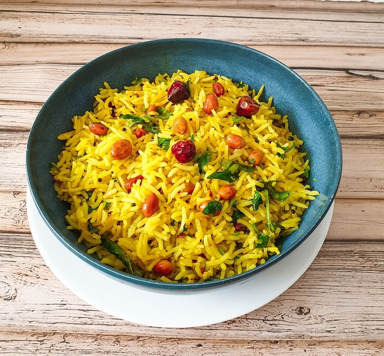

Lemon Rice Recipie

Ingredients
-
1 Cup Rice
-
asafatodia
-
1 tsp mustard seeds
- 1/2 cup curry leaves
- 1 tsp turmeric powder(haldi)
- 1 tsp salt
- 1 tbsp lemon juice
- 2 tbsp coriander leaves chopped
- 2 tbsp peanuts
- 1 tsp channa dal
- 1 piece ginger
- 2 red chilly
Steps
-
Put Your rice in cooker, clean it and soak it for 10 mins
-
Pour water in 1:2 ratio and place the lid on cooker and let it cook for 2 whistles
-
In a tawa, add 2 tsp oil, mustard seeds, asafatodia,ginger,channa dal, curry leaves and saute them well
- When the seeds begin to splutter, add peanuts, turmeric powder followed by rice. Turn around a few times so the rice is completely mixed.
- Add salt and lemon juice to the rice and mix well.
- Voila, Lemon rice is now ready!